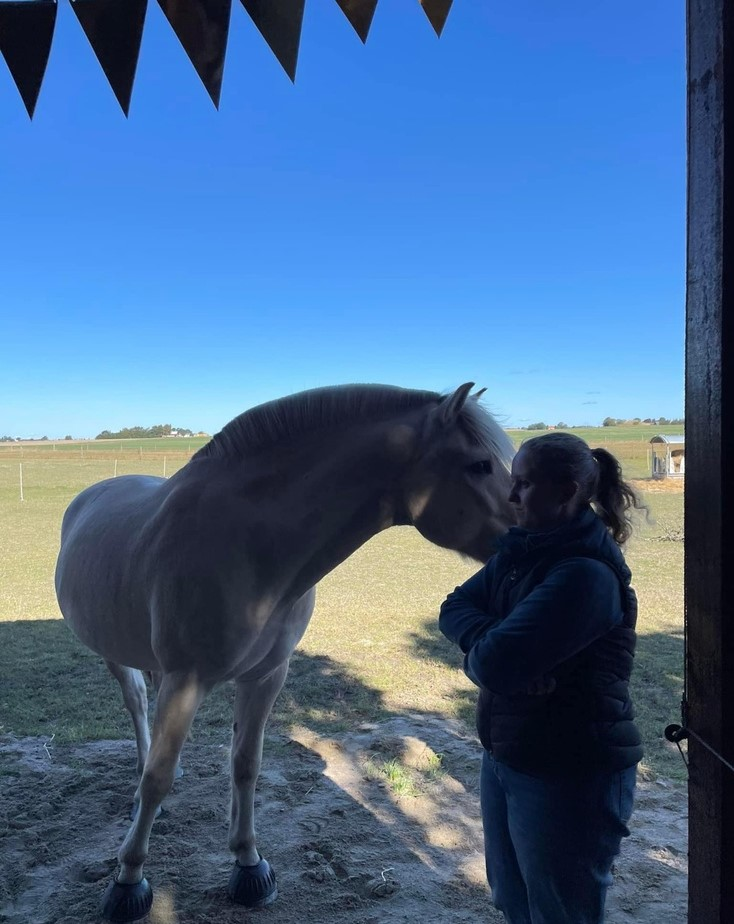
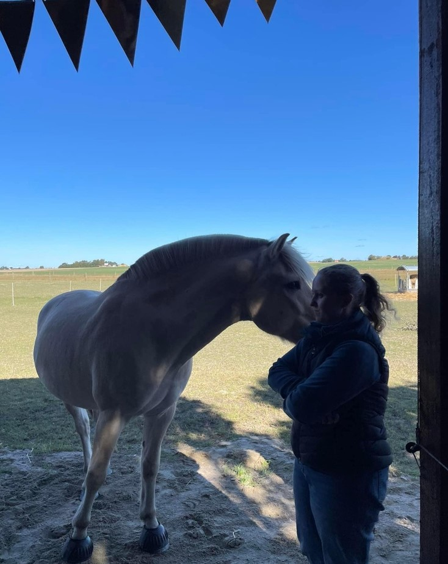

Ridning
Som jag nämnde i texten om mig själv så hänger jag en del i stallet. Jag rider en häst där som jag är medryttare på, det vill säga att han är som min egen de dagarna jag har honom. Jag har hållit på mycket med hästar sedan jag var 7 år gammal då jag började på min första ridskola. Där red jag i ca 1-2 år innan jag bytte till en annan, där jag red i ca 5 år tills jag kände att jag inte utvecklades mer. Då hade jag uppbehåll tills jag hittade en så kallad medryttarhäst, henne hade jag som min egen 3 dagar i veckan. Däremot när jag började gymnasiet kände jag att det tog upp för mycket av min tid så jag slutade på henne. Återigen tog jag ett uppbehåll på ca ett år tills jag insåg hur mycket jag saknade det. Mina rutiner blev för vanliga - vakna, skola, plugg, sova och om igen. Så jag kände att jag behövde kunna få ta paus från min vardag. Då började jag på en ridskola varav jag stannade där i ett och ett halvt år innan jag började på medryttarhästen jag har nu. Även om det tar upp mycket tid, att jag måste anpassa två dagar i veckan just för stallet, så känns det bra att ha något som tar mig ifrån mina måsten i vardagen. När jag är i stallet känner jag att jag kan koppla av och tänka på annat för några timmar.
Jag rider inte för att tävla utan rider mest för att jag tycker det är kul, men jag vill fortfarande utvecklas så jag tränar för en tränare lite då och då. När jag väl tränar så tränar jag dressyr, jag brukar beskriva det som att man "dansar" med hästen då man utför olika rörelser. På en tävling är det då hur fint utfört dessa rörelser görs, från en skala 1-10. Då rider man ett program som är förbestämt för just den klassen. Jag har dock aldrig tävlat men hästen och dess ägare nu har mycket erfarenhet av tävling så hade jag velat så kan jag. Men som sagt så ser jag det mer som en hobby där jag kan ta det lugnt och slappna, är därav inte sugen på att bygga en karriär.
Det jag är mer intresserad av när det kommer till hästar är mer kommunikationen man kan ha med ett så stort och mäktigt djur. Så jag har fokuserat mycket på vår relation och att vi ska repsektera och ha kul med varandra, mest från marken. Man kommer till en viss punkt där man inser att hästar går att träna nästintill likadant som en hund, men med olika sorts kommunikationsspråk. Mest använder man sig av spön eller gör gester med armarna, men oftast nuddar man inte hästen alls förutom lite pet här och var för att hjälpa den att förstå vad jag vill att den ska göra.